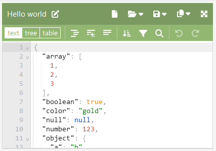
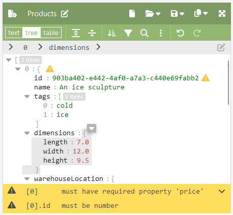

JSON Editor Online Documentation
JSON Editor Online is a web-based tool to view, edit, format, repair, compare, query, transform, validate, and share your JSON data. This documentation page describes how to use the editor.
Panels
JSON Editor online contains of two panels, each showing a JSON document. These documents can be edited independently of each other. In between the two panels, there is a section with buttons to copy or transform contents from the left to the right side or vice versa, and to compare the differences between the two sides. Typical use cases for the two panels are:
- Load a document in the left panel. Then, filter and sort its contents into the right panel without changing the original document.
- Load a JSON document in the left panel, and load a JSON Schema document in the right panel and use this to validate the document in the left panel.
- Compare two documents, highlight the differences.
The width of both panels can be changed by dragging the splitter (the area with the vertical ellipsis icon) in between the two panels. When dragging the splitter fully to the left or the right, one of the panels will be displayed full screen and the other panel will be hidden.
Modes
In both panels, you can select a mode using the mode toggle on the left side in the menu:
There are three modes available:
- Text mode (first picture below) is a regular plain text editor with color highlighting, showing the raw text as-is. It is powered by CodeMirror.
- Tree mode (second picture below) is a high level JSON editor focusing on the actual contents of the document (rather than each comma and quote).
- Table mode (third picture below) is a high level editor presenting the JSON data in a grid view.
Navigate
Text mode
In Text mode, navigation works just like in any plain text or code editor. You can type to change the contents, use mouse and keyboard arrows to navigate the cursor and select text, copy and paste text, etc.
Tree mode
In Tree mode, navigation may some getting used to. This works more similar to a spreadsheet with cells, where in the case of the JSON document, the “cells” are JSON keys and values. You can use the arrow keys to move the cursor around or click somewhere to select the clicked field. To select multiple items, drag over them with the mouse, or use the keys Shift+Arrow Up/Down. To select the area between two items to insert a new item, click on the empty area right from an item, or select the item and then press Arrow-right to move the selection in between the current and next item.
The selected contents can be cut, copied, and pasted inside the editor itself or to the other panel or another application. The selected contents can also be dragged up or down with the mouse inside the current array or object.
To edit a key or value, you can press Enter to open the field in edit mode, or double-click it with the mouse. When just starting to type, edit mode will be opened too and the old contents of the selected field are cleared.
Most operations are available via the context menu, which can be opened by right-clicking on the selected contents. Read more in the Context Menu section.
Table mode
The Table mode is a useful mode to edit a structured array with JSON objects. It works similar to a spreadsheet. Items in the json table can be edited by double-clicking them or pressing Enter when an item is selected. The arrow keys can be used to navigate through the table, and quick-keys Ctrl+X, Ctrl+C, Ctrl+V can be used to cut, copy, and paste an item respectively. Nested contents can be flattened or displayed as a nested object, this can be changed in the configuration modal. When double-clicking a nested object, a popup will open where the contents can be viewed and edited. Clicking one of the column headers will sort the contents on that property.
Context Menu
In Tree mode, the Context Menu is available to apply operations on the selected contents in your JSON document. The Context menu can be opened in various ways:
- by right-clicking on the selected contents
- by clicking the small back arrow down button on the right side of the selection
- by pressing the Windows context menu button on your keyboard
- by clicking the Context menu button in the main menu (the three vertical dots)
The Context Menu contains the following features to edit the selected contents. Most of these features do have keyboard shortcuts.
- Edit (press
Enterto start editing a selected key/value, pressEnteragain to finish, orEscapeto cancel) - Cut (
Ctrl+X), copy (Ctrl+C), and paste (Ctrl+V) - Remove (
Delete) - Duplicate (
Ctrl+D) - Extract
- Sort
- Transform
- Replace or insert new contents (just start typing to replace or insert)
Features
Format
One basic but important feature of the editor is formatting or compacting of a JSON document. Formatting can be done in various ways. In Text mode, there are three buttons: “Format”, “Smart Format”, and “Compact”.
The “Compact” button removes all whitespacing and newlines, making the document as small as possible. The “Format” button formats the document with indentation and newlines, making it easy to read. The “Smart Format” button also makes the document easy to read by adding whitespacing and newlines, but it keeps the document as compact as possible, for example by putting small objects and arrays on a single line. Smart formatting is powered by FracturedJson.
In Tree mode, formatting can be applied when copying to clipboard or when saving the document to disk.
When saving to disk, the document is always formatted.
When copying the selected contents, it is possible to select “Copy compact” in the Context Menu, or use a shortcut key for this: Ctrl+C copies formatted, Ctrl+Shift+C copies compacted. Similarly, the selected contents can be cut either in formatted or compact form, with shortcut keys Ctrl+X and Ctrl+Shift+X.
Sort
To sort the contents of an array or object, open the Sort modal. In case of an array containing objects, you can select which nested field you want to use to sort the items. Note that the Transform modal also allows doing sorting, but in combination with filtering and transformation of the contents.
The Sort button in the main menu will sort the whole document. In Tree mode, it is possible to sort the contents of a nested object or array by selecting it, and using the Sort button from the Context Menu
Transform
The Transform modal is a powerful tool to query and manipulate your JSON document. It can be used to filter, sort, and transform your data. The Transform model can be opened via the main menu and context menu.
When the JSON document is an array, a Wizard is available to make it easier to select fields to apply filtering or sorting, and pick the fields that you need from the data. If the wizard doesn’t have enough options to describe the query that you need, you can adjust the query to your liking in the Query field.
JSON editor supports four different query languages:
-
JSON Query. This is the default query language. Example query:
filter(.address.city == "New York") | sort(.name) | pick(.name, .age) -
JMESPath. Example query:
[*] | sort_by(@, &address.city) | [*].{name: name, username: username, city: address.city} -
JSONPath. Example query:
$.store.book[*].author -
JavaScript with Lodash. Example query:
function query(data) { data = _.orderBy(data, [['address', 'city']], ['asc']) data = _.map(data, (item) => ({ name: _.get(item, ['name']), username: _.get(item, ['username']), city: _.get(item, ['address', 'city']) })) return data }
The query language can be selected via the top right “Options” button of the Transform modal.
Compare
JSON Editor can compare the two documents in the left and right panel. To enable comparison, click the “Enable” button between the two panels, under the section “Differences”. The editor takes the left panel as the old version of the data, and the right panel as the new version of the data. There are three highlighting colors:
- Green: added data. Data present in the right panel (new) but not in the left panel.
- Orange: changed data. Data is present in both panels but is changed.
- Red: removed data. Data is present in the left panel (old) but not in the right panel.
The diffing algorithm can smartly compare arrays and will detect additions and deletions in array items. In objects, the algorithm does compare the properties content wise, without looking at the order of the properties. The number of differences will be displayed, and with the navigation buttons you can inspect the differences one by one.
Highlighting of differences is only supported in Tree mode, not in text mode.
Repair
JSON Editor online can automatically repair many small issues in JSON documents, like missing or trailing commas, replacing missing or singe quotes, stripping comments, and replacing JSONP, MongoDB, or newline delimited JSON.
When loading a document in Tree mode, JSON will automatically be repaired when possible, and you will be informed about that and can decide otherwise. In Text mode, an error message will be displayed at the bottom with an “Auto Repair” button. Clicking on the error message will scroll to the location of the error.
The repair features are described in detail at https://github.com/josdejong/jsonrepair .
Validate
JSON Schema documents can be used to validate the structure of a JSON document.
The JSON Editor can not enforce a JSON schema, it will only display warnings when a document doesn’t adhere to the schema. The user will have to fix the issues by himself. JSON Schema warnings will be displayed both inline and at the bottom of the editor. Clicking on a warning at the bottom will scroll to the location of the issue.
A JSON schema document can be specified in Document Properties > Schema > Configure. One can paste the JSON Schema there, refer to an online document, or to the other panel in the editor.
This will open the JSON Schema configuration modal. You can configure to use the JSON in the other panel as schema, select one of your saved documents as schema, specify the text of the Schema and embed this in your document, or specify an url that provides the JSON schema.
JSON Editor uses ajv to compile and run JSON documents against a JSON Schema. For more information on JSON Schema in general, see: https://json-schema.org/ .
Documents
JSON Editor Online has a couple of ways you can load, save and share documents, via the dropdown menu’s “Open” and “Save”.
Document properties
After a document is saved, it’s properties can be viewed and edited by opening the Document Properties modal via the button top left:

The Document properties modal shows the name, schema, date, and size of the document. It shows where the document is stored, and whether the document is public or private. In this modal, you can rename the document, change the JSON schema, change the document access (public or private). When the document is public, you can copy the url to share it with others. Note that public documents can be viewed, edited, and deleted by anyone that has the url. In the bottom left, there is a button “Delete document” which will delete the document. In case of a public cloud document, there is an additional button “Forget document”, which will remove the document from your files list but will not delete the document from the cloud.
Local storage
By default, when working on a document in the editor, it will be automatically persisted in your browsers local storage in order not to lose data. The size of these documents is limited to 1 MB.
Note that JSON Editor Online does not have a login or account. Recent documents are stored in your browser’s local storage. When clearing your browser cache, this list will be gone.
Cloud storage
JSON Editor Online comes with free cloud storage for your documents. The cloud documents have a limit of 1 MB.
WARNING: Documents stored in the cloud can be viewed and edited by anyone who knows the document’s id.
To store a document in the cloud, select “Save”, “Save to cloud” from the main menu. The document can be deleted via “Options”, “Delete document”, or in the list with recent files “Open”, “Open a recent file”.
When a document is stored in the cloud (and not in your browsers local storage), a Cloud icon is displayed left from the document name. Cloud documents can be shared with others via the “Share” button.
Files from disk
You can load and save files from disk via the menu “Open”, “Open from disk and “Save”, “Save to disk”. You can also drag and drop files from your computer onto the left or right panel of the JSONEditor to load them. You can open both JSON and CSV files.
Import CSV
CSV documents (comma separated values) can be opened via the menu “Open”, “Import CSV”. CSV is a common data format used for example in spreadsheet applications. When importing a CSV, it is necessary to specify whether the file contains a header or not, and what delimiter is used.
When field names contain a dot, like “address.city” and “address.street”, it can be parsed into a nested JSON object by selecting “Nested objects”. So this can for example result in a nested JSON object {"address": {"city": "Rotterdam", "street": "Coolsingel"}} instead of a flat JSON object {"address.city": "Rotterdam", "address.street": "Coolsingel"}}.
You can read more about CSV in the article “Convert JSON to CSV using JSON Editor Online”.
Export to CSV
A JSON document can be exported to CSV via the menu “Save”, “Export to CSV”. A typical use case is to load and preprocess your JSON data in JSON Editor Online: filter and sort the data, remove redundant fields. Then, the data can be exported to CSV and loaded into a spreadsheet application to do further analysis, like plotting graphs or importing the data in another application.
Exporting to CSV will open a modal where a preview of the CSV file is displayed. You can select whether to include a header row, and you can configure whether to flatten nested objects or arrays. Flattening nested objects is useful since Spreadsheet applications can only handle a flat table with data and cannot handle nested data. Be careful with flattening nested arrays: this can result in a large amount of columns when one of the arrays contains a lot of values.
The CSV data can be copied to your system clipboard or saved to a file on disk.
You can read more about CSV in the article “Convert JSON to CSV using JSON Editor Online”.
Url
The web application supports a set of url hash parameters which can be used to load documents from an url, pass small JSON documents, and configure the mode of the editor and visibility of the panels. The following hash parameters are available:
| Hash parameter | Value | Description |
|---|---|---|
left | string | Configure the id of the document loaded in the left panel |
left_mode | "text" | "tree" | "table" | Configure the mode of the editor in the left panel |
right | string | Configure the id of the document loaded in the right panel |
right_mode | "text" | "tree" | "table" | Configure the mode of the editor in the right panel |
compare | "true" | "false" | Turn comparing the documents in the left panel on or off |
panels | "left" | "right" | "both" | Configure which of the panels is visible |
Documents can be loaded by providing a URL via the hash parameters left or right. This URL must be public and not require authentication. It must also be a secure url (https) and allow CORS (Cross-Origin Resource Sharing) in order to work. If the url is unsecure (http) or has no CORS support, you can select “Use proxy” to open it via a proxy. The proxy requires the url to be available publicly on the internet, it does not support urls inside a local network.
Saving to a URL is possible too. In that case a POST request to the specified URL is done, with the JSON document as request body. The URL must not require authentication and must have CORS enabled.
To open a URL of an online JSON document programmatically, use the hash parameters left and/or right, and specify the urls as value with "url." as prefix:
https://jsoneditoronline.org/#left=url.ENCODED_URL_HERE&right=url.ENCODED_URL_HEREIt is important that the URL’s are encoded (you’re showing urls inside and url). This can be done for example with the JavaScript function encodeURIComponent.
To load a JSON document programmatically, use the hash parameters left and/or right, and specify the JSON document as value with "json." as prefix:
https://jsoneditoronline.org/#left=json.ENCODED_JSON_CONTENTS&right=json.ENCODED_JSON_CONTENTSFor example, to load [1,2,3] in the left panel, and {"a":1,"b":2} in the right panel:
An example loading a JSON document in the left panel, setting the mode to tree, and making sure only the left panel is visible:
https://jsoneditoronline.org/#left=json.%5B1%2C2%2C3%5D&left_mode=tree&panels=left
Note that a URL can have a limited length, so it is not possible to share a large JSON document via the hash parameters. The maximum length is browser dependent.
Configuration modal
Clicking “Configure editor” in the “Settings” menu will open the Configuration modal. In the configuration modal you can change the settings of the editor. It contains the following options:
- The font size of the text contents of the JSON documents.
- The indentation used when formatting the document: whether to use spaces or tabs, and how many spaces to use for indentation. For smart formatting, there is an option “max line length” determining how many characters can be put on a single line.
- Configure whether to escape control characters like return
\nand tab\t. This is only applicable for Tree mode, in Text mode control characters are always escaped. - Configure whether to escape unicode characters like smileys 😀.
- In Table view, you can choose to flatten nested object properties into separate columns, or render them inline in a single column.
- Configure which JSON parser to use.
JSON parser options:
- Auto select: selects the Lossless JSON Parser for documents up to 10 MB, and selects the fast Native JSON Parser for larger documents.
- Native JSON Parser: uses the browser’s built-in JSON parser. This parser is very fast, but cannot handle long numbers like
18800000000000000123. - Lossless JSON parser: can handle long numbers like
18800000000000000123and maintains the formatting of numbers like4.0. The parser is slower than the Native JSON parser, which is noticeable for documents larger than 10 MB.
Note that switching to a different parser will only be applied after reloading the currently opened documents.
Developer Tools
In the Developer Console of your browser you can get access to the left and right JSON Editor instance, and you can use various JSON utility libraries like jsonrepair and lodash. The options are explained in detail when you open the Developer Console, via F12 or Ctrl+Shift+I (Cmd+Shift+I) or via “Application Menu” > “More Tools” > “Developer Tools”.